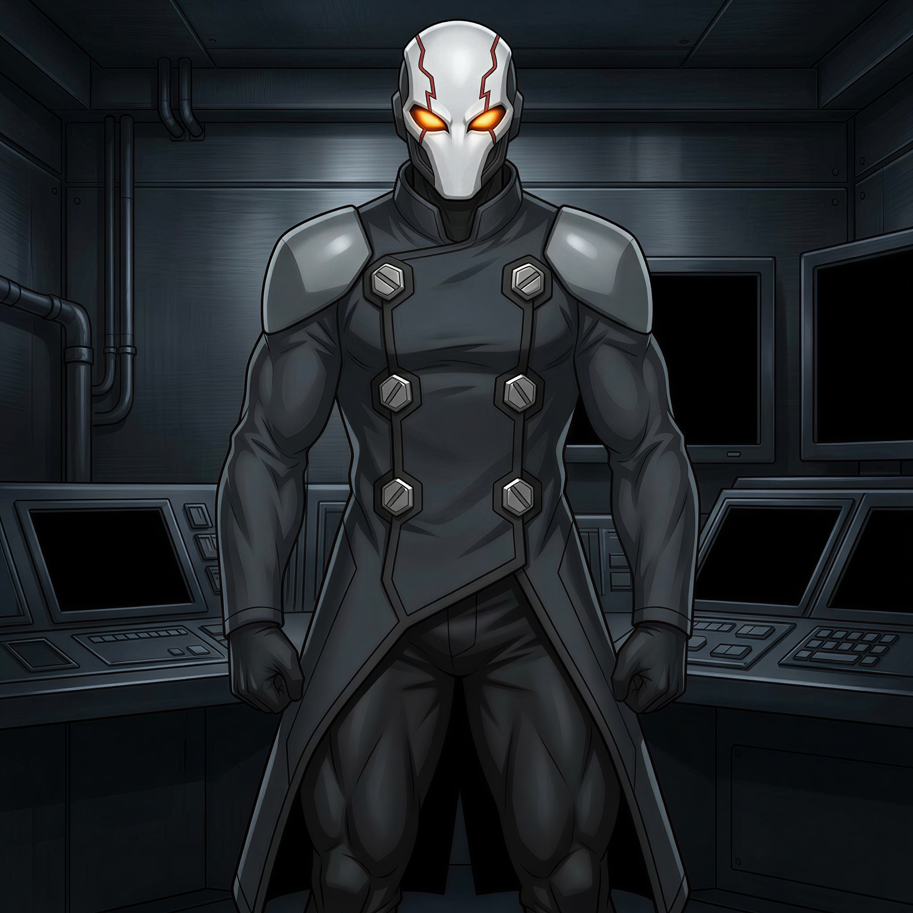
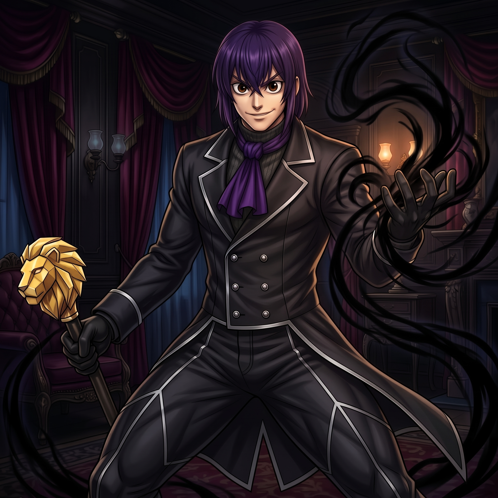

Registro: 11/11/1971 | 1,93 m | 102 kg
História: Desde a infância, Slyke Strix demonstrava um QI assustador e, ao perceber que o corpo humano era frágil demais para o ritmo de sua mente, criou e usou em si mesmo um soro que lhe deu força e resistência sobre-humanas. Anos depois, ao ser traído por seu parceiro cientista mais próximo, que roubou sua maior criação para lucrar e destruí-lo, Slyke deu a volta por cima de forma implacável e usou uma invenção tática para matar o ex-amigo. A traição provou que a humanidade era medíocre, invejosa e falha, levando-o a assumir a identidade de Deadlock e se declarar o ápice da evolução tecnológica e intelectual, o único homem capaz e digno de ditar os rumos do planeta. Ciente de que sua guerra o tornaria o inimigo número um da Terra, terminou o casamento com sua esposa Zara Vex não por desdém, mas para protegê-la e não atrapalhar sua visão grandiosa. Hoje, Deadlock busca dominar o planeta como um palco para demonstrar com extrema dramaticidade sua genialidade superior, contando para isso com vastos exércitos robóticos, máquinas de guerra colossais, androides de combate e criaturas biomecânicas.

Registro: Idade Imprecisa | 1,87 m | 85 kg
História: Há muito tempo, o portal para a dimensão demoníaca de Avernox foi selado, deixando milhares de demônios presos na Terra, entre eles o pai de Smerchnir, que acabou caçado e morto por heróis que o viam apenas como uma ameaça demoníaca. Crescendo sob esse rancor, o híbrido Smerchnir desenvolveu o domínio da umbracinese herdado de seu pai e usou seu intelecto para se tornar um bilionário ao erguer a Dark Matter Corp. (D.M.C.), um gigante de tecnologia que serve de fachada pública impecável. Nos bastidores da empresa, ele comanda um exército paramilitar particular com o auxílio direto de sua leal mordoma demoníaca, Glockenia Malice, tendo como grande objetivo localizar a chave oculta para quebrar o selo de Avernox e permitir que o Imperador e os demônios mais poderosos finalmente invadam a Terra. Enquanto busca essa chave, Smerchnir recruta híbridos, demônios desgarrados e criaturas menores que conseguem atravessar por fendas dimensionais instáveis, reunindo um exército cada vez maior para fortalecer seus planos e preparar o caminho para a chegada do Imperador de Avernox.